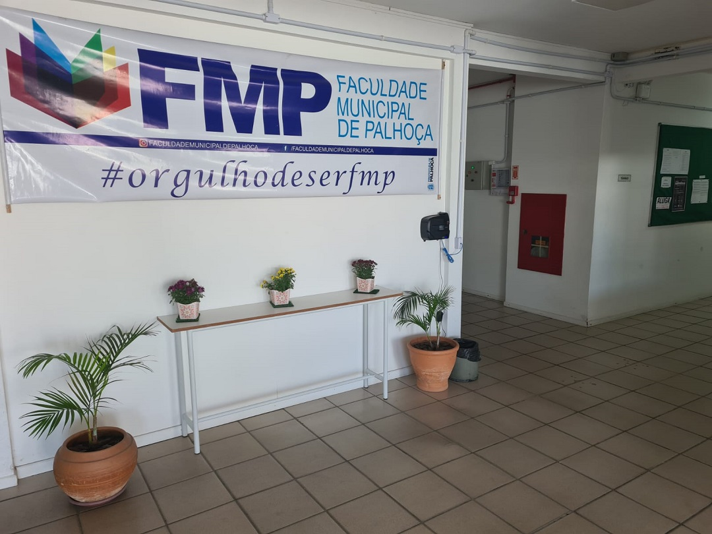

A Faculdade Municipal de Palhoça – Educadora Marileia Silveira da Costa, FMP, foi fundada em 25 de outubro de 2005 e inaugurada em 20 de abril de 2006,
a lei Municipal que deu origem a instituição foi a lei nº 2.182.
Cursos:
Bacharelado em Administração
Licenciatura em Pedagogia
Tecnólogo em Gestão do Turismo
Tecnólogo em Análise e Desenvolvimento de Sistemas
